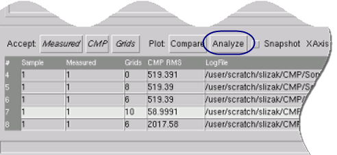
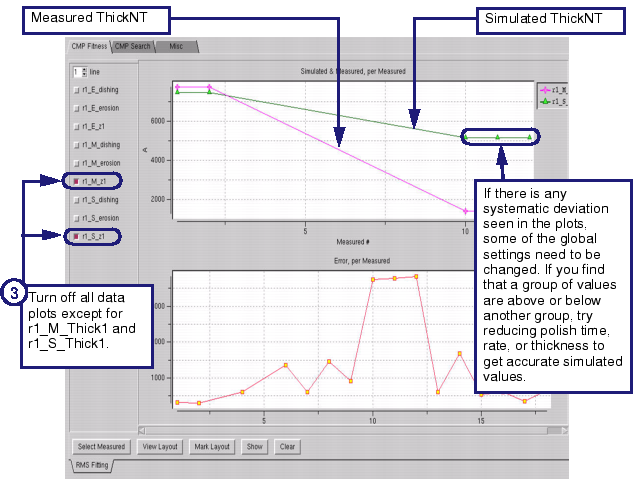

After a successful
optimization attempt, you analyze data plots to isolate outlier
data points that might skew the model accuracy. Group measured and
simulated values together for analysis.
The lines in the plots are labeled with two
prefixes and the property in the form r#_type_property,
such as “r1_S_dishing.” The parts are as follows:
The r#_ prefix denotes which run a line is
from.
The type is
one of M_, S_, and E_. These denote Measured, Simulated, and Error
values, respectively.
The property refers
to properties seen in the MDT such as “dishing”, “erosion”, or “ThickNT.”
Each symbol on the data plot represents an
absolute thickness measurement in the MD file.
Generally, it is best to start by comparing
measured and simulated thickness (r1_S_Thick1 and r1_M_Thick1).
If thickness looks good, analyze erosion (r1_S_erosion and r1_M_erosion)
and dishing (r1_S_dishing and r1_M_dishing). For each plot, adjust
the process recipe file so that it results in simulated data (r1_S*)
that look similar to measured data (r1_M*). When these three plots
meet your specifications you can start using them for analysis,
simulations, and DFM applications.
Procedure
- Run a CMP model trial run
to obtain a CMP RMS value if you have not already done so.
- Select the model trial run
in the table of log files and click Analyze.
Figure 1. Selecting a Log File
to Analyze
- View measured and simulated
data in pairs. The first pair to analyze is r1_M_Thick1 and r1_S_Thick1
as shown in Figure 2. Turn off the other data sets to inspect
only this set of values.
For plots that do not match
well because of systematic deviations, adjust the parameters in
the process recipe file then run another model in (T)ry mode to
see if the CMP RMS value is lower.
For simulated values that deviate
by a large amount, or for spikes in plots that should be steadily
decreasing, try disabling a data point:
- Select the data point in the
plot.
- Click the Select Measured button. The Measured tab in the CMP Model
Builder window highlights the data point.
- Click Disable to isolate the data
point from the rest of the file.
- Run another model in (T)ry
mode. If this is the outlier, a lower CMP RMS value should result.
Continue changing the model parameters until the measured values and
the simulated values are alike.
Figure 2. Analyzing Simulated
and Measured Plots
- If the absolute measurements
(ThickNT’s in the first plot) match, look at the erosion data (r1_M_erosion
and r1_S_erosion), then the dishing data (r1_M_dishing and r1_S_dishing).
- After trial runs have met
your specifications, the optimized model and the best values for
your parameters are located in the directory specified in Outdir. The optimized model
has the .in file extension.
This is the final optimized CMP model.
Tip In order to check the exact
measured site, select the data plot values of interest and click Mark Layout to see the measurement
site in the Calibre WORKbench main display window.